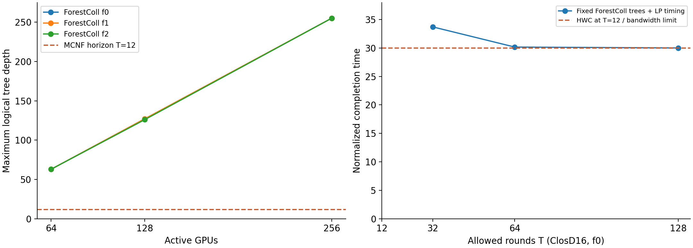

ForestColl 在标准 ClosD 上的表现
2026-09-23 · 16卡验证 + 64/128/256卡 × 坏0/1/2卡 · 原 MCNF_tree 无修改
9/9 完整森林通过物理容量检查。稳态 RS+AG 带宽值为126/254/510；它们不是 T=12 完成时间。本次树深最高63/127/255。按我们的实际截断规则剔除过深树后，9个标准case均无法在T=12完成。

标准结果
| GPU | 坏卡 | ForestColl带宽时间 | MCNF历史T12 | 原空间合格 | 树深范围 | 合成秒 | T12剩余树 | 截断重优化 |
|---|
| 64 | 0 | 126 | 125.999992 | 是 | 12–63 | 1.867 | 1 | infeasible |
| 64 | 1 | 126 | 126.000025 | 是 | 13–63 | 1.320 | 0 | no_tree_after_depth_filter |
| 64 | 2 | 126 | 125.999993 | 是 | 17–63 | 1.691 | 0 | no_tree_after_depth_filter |
| 128 | 0 | 254 | 254.000004 | 是 | 38–127 | 7.300 | 0 | no_tree_after_depth_filter |
| 128 | 1 | 254 | 253.999874 | 是 | 38–127 | 7.541 | 0 | no_tree_after_depth_filter |
| 128 | 2 | 254 | 254.021537 | 否 | 33–126 | 7.886 | 0 | no_tree_after_depth_filter |
| 256 | 0 | 510 | 518.045259 | 是 | 88–255 | 64.812 | 0 | no_tree_after_depth_filter |
| 256 | 1 | 510 | 517.780204 | 否 | 89–255 | 82.361 | 0 | no_tree_after_depth_filter |
| 256 | 2 | 510 | 518.237883 | 否 | 87–255 | 71.105 | 0 | no_tree_after_depth_filter |
比较口径
标准输入直接取归档中的 network/task/comm/modeling 字段；失败 ID 为 64:[13,2]、128:[26,5]、256:[52,11]。启用备用 GPU，保持活动卡数不变；带宽均为 1。
任务 data_volume=1 在 canonical generator 中扩成 M=N。ForestColl 每根 k=1，每棵树广播量 M/(Nk)=1；AllGather 带宽时间 U/k，RS+AG 两阶段带宽时间 2U/k。
ForestColl 原生没有 T 参数。`fixed_K` 控制每根树数，不控制深度。代码 `convertToRuntime` 返回 U/(Nk)，乘 M 得带宽模型的时间；未加入树深、启动延迟或有限分块的流水线填充/排空时间。
`forest_t12` 固定原树和原权重，在复制的 canonical MCNF 模型中检查可行性。`pruned_t12` 才是本项目的真实截断规则：剔除 depth>T 的完整候选树，并让 LP 重优化剩余树权重。这是 ForestColl 候选树 + MCNF 混合诊断，不能称为 ForestColl 原算法结果。
单向深度≤T 只是初筛。AllReduce 还要在同一 T 内完成 reduce 与 broadcast 的依赖。ClosD64/f0 剩一棵深度 12 的树，但两阶段仍不可行；其余 8 个标准 case 的所有候选树都被剔除。
所有树按 GPU 间逻辑发送计算深度，交换机不另算计算节点。检查了根、全部参与者、路径连续性、真实物理边、每根 chunk 总量、边容量和与 MCNF 唯一物理路由的一致性。
MCNF 标准大规模结果来自现有 main-only 归档，没有重新跑 GPU。128/f2、256/f1、256/f2 不满足 1e-4 原空间门槛；保留标识，不能当作可靠最优值。64 与128其余行约等于 ForestColl 带宽值；256/f0 为518.045，相比理想带宽值510约高1.58%，但这不是可实现的 ForestColl T12 加速比。
ForestColl 合成在本机 Apple M4 / Java25 / common pool parallelism=4 / Xmx4g 上执行。合成秒包含 JVM 启动与映射回物理路径；MCNF 历史求解在另一台 CPU/GPU 机器上，不能据此宣称同机求解加速。时间为单次观测，部分小规模诊断与大规模合成有重叠。
没有进行 NCCL/RCCL GPU 执行或真实网络测试；这里比较的是合成和数学调度。
有限轮数验证
ClosD16/f0 原森林配额不变，MCNF仅优化时间安排：T=32 → 33.693504；T=64 → 30.161532；T=128 → 30.002436。HWC在T=12已达到30。以上均经过原空间检查，尚未进行真实GPU通信测试。
论文附录E.3承认低树高有利于延迟和吞吐收敛，但最小高度树打包的困难性不能推出所有多项式算法都无法控制树深。
详细说明与重跑命令 · 汇总JSON · 论文附录E.3